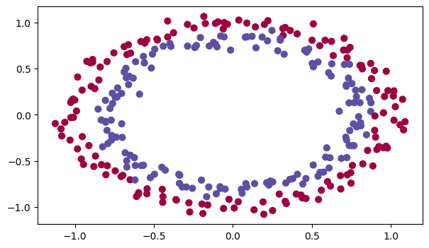

### v1.1Initialization
Welcome to the first assignment of Improving Deep Neural Networks!
Training your neural network requires specifying an initial value of the weights. A well-chosen initialization method helps the learning process.
If you completed the previous course of this specialization, you probably followed the instructions for weight initialization, and seen that it’s worked pretty well so far. But how do you choose the initialization for a new neural network? In this notebook, you’ll try out a few different initializations, including random, zeros, and He initialization, and see how each leads to different results.
A well-chosen initialization can: - Speed up the convergence of gradient descent - Increase the odds of gradient descent converging to a lower training (and generalization) error
Let’s get started!
Important Note on Submission to the AutoGrader
Before submitting your assignment to the AutoGrader, please make sure you are not doing the following:
- You have not added any extra
printstatement(s) in the assignment. - You have not added any extra code cell(s) in the assignment.
- You have not changed any of the function parameters.
- You are not using any global variables inside your graded exercises. Unless specifically instructed to do so, please refrain from it and use the local variables instead.
- You are not changing the assignment code where it is not required, like creating extra variables.
If you do any of the following, you will get something like, Grader Error: Grader feedback not found (or similarly unexpected) error upon submitting your assignment. Before asking for help/debugging the errors in your assignment, check for these first. If this is the case, and you don’t remember the changes you have made, you can get a fresh copy of the assignment by following these instructions.
Table of Contents
- 1 - Packages
- 2 - Loading the Dataset
- 3 - Neural Network Model
- 4 - Zero Initialization
- 5 - Random Initialization
- 6 - He Initialization
- 7 - Conclusions
import numpy as np
import matplotlib.pyplot as plt
import sklearn
import sklearn.datasets
from public_tests import *
from init_utils import sigmoid, relu, compute_loss, forward_propagation, backward_propagation
from init_utils import update_parameters, predict, load_dataset, plot_decision_boundary, predict_dec
%matplotlib inline
plt.rcParams['figure.figsize'] = (7.0, 4.0) # set default size of plots
plt.rcParams['image.interpolation'] = 'nearest'
plt.rcParams['image.cmap'] = 'gray'
%load_ext autoreload
%autoreload 2
# load image dataset: blue/red dots in circles
# train_X, train_Y, test_X, test_Y = load_dataset()train_X, train_Y, test_X, test_Y = load_dataset()
For this classifier, you want to separate the blue dots from the red dots.
You’ll use a 3-layer neural network (already implemented for you). These are the initialization methods you’ll experiment with: - Zeros initialization – setting initialization = "zeros" in the input argument. - Random initialization – setting initialization = "random" in the input argument. This initializes the weights to large random values.
- He initialization – setting initialization = "he" in the input argument. This initializes the weights to random values scaled according to a paper by He et al., 2015.
Instructions: Instructions: Read over the code below, and run it. In the next part, you’ll implement the three initialization methods that this model() calls.
def model(X, Y, learning_rate = 0.01, num_iterations = 15000, print_cost = True, initialization = "he"):
"""
Implements a three-layer neural network: LINEAR->RELU->LINEAR->RELU->LINEAR->SIGMOID.
Arguments:
X -- input data, of shape (2, number of examples)
Y -- true "label" vector (containing 0 for red dots; 1 for blue dots), of shape (1, number of examples)
learning_rate -- learning rate for gradient descent
num_iterations -- number of iterations to run gradient descent
print_cost -- if True, print the cost every 1000 iterations
initialization -- flag to choose which initialization to use ("zeros","random" or "he")
Returns:
parameters -- parameters learnt by the model
"""
grads = {}
costs = [] # to keep track of the loss
m = X.shape[1] # number of examples
layers_dims = [X.shape[0], 10, 5, 1]
# Initialize parameters dictionary.
if initialization == "zeros":
parameters = initialize_parameters_zeros(layers_dims)
elif initialization == "random":
parameters = initialize_parameters_random(layers_dims)
elif initialization == "he":
parameters = initialize_parameters_he(layers_dims)
# Loop (gradient descent)
for i in range(num_iterations):
# Forward propagation: LINEAR -> RELU -> LINEAR -> RELU -> LINEAR -> SIGMOID.
a3, cache = forward_propagation(X, parameters)
# Loss
cost = compute_loss(a3, Y)
# Backward propagation.
grads = backward_propagation(X, Y, cache)
# Update parameters.
parameters = update_parameters(parameters, grads, learning_rate)
# Print the loss every 1000 iterations
if print_cost and i % 1000 == 0:
print("Cost after iteration {}: {}".format(i, cost))
costs.append(cost)
# plot the loss
plt.plot(costs)
plt.ylabel('cost')
plt.xlabel('iterations (per hundreds)')
plt.title("Learning rate =" + str(learning_rate))
plt.show()
return parametersThere are two types of parameters to initialize in a neural network: - the weight matrices \((W^{[1]}, W^{[2]}, W^{[3]}, ..., W^{[L-1]}, W^{[L]})\) - the bias vectors \((b^{[1]}, b^{[2]}, b^{[3]}, ..., b^{[L-1]}, b^{[L]})\)
### Exercise 1 - initialize_parameters_zeros
Implement the following function to initialize all parameters to zeros. You’ll see later that this does not work well since it fails to “break symmetry,” but try it anyway and see what happens. Use np.zeros((..,..)) with the correct shapes.
# GRADED FUNCTION: initialize_parameters_zeros
def initialize_parameters_zeros(layers_dims):
"""
Arguments:
layer_dims -- python array (list) containing the size of each layer.
Returns:
parameters -- python dictionary containing your parameters "W1", "b1", ..., "WL", "bL":
W1 -- weight matrix of shape (layers_dims[1], layers_dims[0])
b1 -- bias vector of shape (layers_dims[1], 1)
...
WL -- weight matrix of shape (layers_dims[L], layers_dims[L-1])
bL -- bias vector of shape (layers_dims[L], 1)
"""
parameters = {}
L = len(layers_dims) # number of layers in the network
for l in range(1, L):
#(≈ 2 lines of code)
# parameters['W' + str(l)] =
# parameters['b' + str(l)] =
# YOUR CODE STARTS HERE
parameters['W' + str(l)] = np.zeros((layers_dims[l], layers_dims[l-1]))
parameters['b' + str(l)] = np.zeros((layers_dims[l], 1))
# YOUR CODE ENDS HERE
return parametersparameters = initialize_parameters_zeros([3, 2, 1])
print("W1 = " + str(parameters["W1"]))
print("b1 = " + str(parameters["b1"]))
print("W2 = " + str(parameters["W2"]))
print("b2 = " + str(parameters["b2"]))
initialize_parameters_zeros_test(initialize_parameters_zeros)W1 = [[0. 0. 0.]
[0. 0. 0.]]
b1 = [[0.]
[0.]]
W2 = [[0. 0.]]
b2 = [[0.]]
Error: Datatype mismatch
Error: Wrong shape
Error: Wrong output
0 Tests passed
3 Tests failed--------------------------------------------------------------------------- AssertionError Traceback (most recent call last) Cell In[6], line 6 4 print("W2 = " + str(parameters["W2"])) 5 print("b2 = " + str(parameters["b2"])) ----> 6 initialize_parameters_zeros_test(initialize_parameters_zeros) File ~/c/lnu/2023-2024.2/dl_nlp/coursera/deep_learning_2/W1A1/public_tests.py:98, in initialize_parameters_zeros_test(target) 70 expected_output = {'W1': np.array([[0., 0., 0.], 71 [0., 0., 0.]]), 72 'b1': np.array([[0.], 73 [0.]]), 74 'W2': np.array([[0., 0.]]), 75 'b2': np.array([[0.]])} 77 test_cases = [ 78 { 79 "name":"datatype_check", (...) 95 } 96 ] ---> 98 multiple_test(test_cases, target) File ~/c/lnu/2023-2024.2/dl_nlp/coursera/deep_learning_2/W1A1/public_tests.py:62, in multiple_test(test_cases, target) 60 print('\033[92m', success, " Tests passed") 61 print('\033[91m', len(test_cases) - success, " Tests failed") ---> 62 raise AssertionError( 63 "Not all tests were passed for {}. Check your equations and avoid using global variables inside the function.".format(target.__name__)) AssertionError: Not all tests were passed for initialize_parameters_zeros. Check your equations and avoid using global variables inside the function.
Run the following code to train your model on 15,000 iterations using zeros initialization.
parameters = model(train_X, train_Y, initialization = "zeros")
print ("On the train set:")
predictions_train = predict(train_X, train_Y, parameters)
print ("On the test set:")
predictions_test = predict(test_X, test_Y, parameters)The performance is terrible, the cost doesn’t decrease, and the algorithm performs no better than random guessing. Why? Take a look at the details of the predictions and the decision boundary:
print ("predictions_train = " + str(predictions_train))
print ("predictions_test = " + str(predictions_test))plt.title("Model with Zeros initialization")
axes = plt.gca()
axes.set_xlim([-1.5,1.5])
axes.set_ylim([-1.5,1.5])
plot_decision_boundary(lambda x: predict_dec(parameters, x.T), train_X, train_Y)For a comprehensive explanation of this, you can read Paul Mielke’s post, Symmetry Breaking versus Zero Initialization.
A simple explanation is provided below:
Note: For sake of simplicity calculations below are done using only one example at a time.
Since the weights and biases are zero, multiplying by the weights creates the zero vector which gives 0 when the activation function is ReLU. As z = 0
\[a = ReLU(z) = max(0, z) = 0\]
At the classification layer, where the activation function is sigmoid you then get (for either input):
\[\sigma(z) = \frac{1}{ 1 + e^{-(z)}} = \frac{1}{2} = y_{pred}\]
As for every example you are getting a 0.5 chance of it being true our cost function becomes helpless in adjusting the weights.
Your loss function: \[ \mathcal{L}(a, y) = - y \ln(y_{pred}) - (1-y) \ln(1-y_{pred})\]
For y=1, y_pred=0.5 it becomes:
\[ \mathcal{L}(0, 1) = - (1) \ln(\frac{1}{2}) = 0.6931471805599453\]
For y=0, y_pred=0.5 it becomes:
\[ \mathcal{L}(0, 0) = - (1) \ln(\frac{1}{2}) = 0.6931471805599453\]
As you can see with the prediction being 0.5 whether the actual (y) value is 1 or 0 you get the same loss value for both, so none of the weights get adjusted and you are stuck with the same old value of the weights.
This is why you can see that the model is predicting 0 for every example! No wonder it’s doing so badly.
In general, initializing all the weights to zero results in the network failing to break symmetry. This means that every neuron in each layer will learn the same thing, so you might as well be training a neural network with \(n^{[l]}=1\) for every layer. This way, the network is no more powerful than a linear classifier like logistic regression.
What you should remember: - The weights \(W^{[l]}\) should be initialized randomly to break symmetry. - However, it’s okay to initialize the biases \(b^{[l]}\) to zeros. Symmetry is still broken so long as \(W^{[l]}\) is initialized randomly.
To break symmetry, initialize the weights randomly. Following random initialization, each neuron can then proceed to learn a different function of its inputs. In this exercise, you’ll see what happens when the weights are initialized randomly, but to very large values.
### Exercise 2 - initialize_parameters_random
Implement the following function to initialize your weights to large random values (scaled by *10) and your biases to zeros. Use np.random.randn(..,..) * 10 for weights and np.zeros((.., ..)) for biases. You’re using a fixed np.random.seed(..) to make sure your “random” weights match ours, so don’t worry if running your code several times always gives you the same initial values for the parameters.
# GRADED FUNCTION: initialize_parameters_random
def initialize_parameters_random(layers_dims):
"""
Arguments:
layer_dims -- python array (list) containing the size of each layer.
Returns:
parameters -- python dictionary containing your parameters "W1", "b1", ..., "WL", "bL":
W1 -- weight matrix of shape (layers_dims[1], layers_dims[0])
b1 -- bias vector of shape (layers_dims[1], 1)
...
WL -- weight matrix of shape (layers_dims[L], layers_dims[L-1])
bL -- bias vector of shape (layers_dims[L], 1)
"""
np.random.seed(3) # This seed makes sure your "random" numbers will be the as ours
parameters = {}
L = len(layers_dims) # integer representing the number of layers
for l in range(1, L):
#(≈ 2 lines of code)
# parameters['W' + str(l)] =
# parameters['b' + str(l)] =
# YOUR CODE STARTS HERE
parameters['W' + str(l)] = np.random.randn(layers_dims[l], layers_dims[l-1])*10
parameters['b' + str(l)] = np.zeros((layers_dims[l], 1))
# YOUR CODE ENDS HERE
return parametersparameters = initialize_parameters_random([3, 2, 1])
print("W1 = " + str(parameters["W1"]))
print("b1 = " + str(parameters["b1"]))
print("W2 = " + str(parameters["W2"]))
print("b2 = " + str(parameters["b2"]))
initialize_parameters_random_test(initialize_parameters_random)Run the following code to train your model on 15,000 iterations using random initialization.
parameters = model(train_X, train_Y, initialization = "random")
print ("On the train set:")
predictions_train = predict(train_X, train_Y, parameters)
print ("On the test set:")
predictions_test = predict(test_X, test_Y, parameters)If you see “inf” as the cost after the iteration 0, this is because of numerical roundoff. A more numerically sophisticated implementation would fix this, but for the purposes of this notebook, it isn’t really worth worrying about.
In any case, you’ve now broken the symmetry, and this gives noticeably better accuracy than before. The model is no longer outputting all 0s. Progress!
print (predictions_train)
print (predictions_test)plt.title("Model with large random initialization")
axes = plt.gca()
axes.set_xlim([-1.5,1.5])
axes.set_ylim([-1.5,1.5])
plot_decision_boundary(lambda x: predict_dec(parameters, x.T), train_X, train_Y)Observations: - The cost starts very high. This is because with large random-valued weights, the last activation (sigmoid) outputs results that are very close to 0 or 1 for some examples, and when it gets that example wrong it incurs a very high loss for that example. Indeed, when \(\log(a^{[3]}) = \log(0)\), the loss goes to infinity. - Poor initialization can lead to vanishing/exploding gradients, which also slows down the optimization algorithm. - If you train this network longer you will see better results, but initializing with overly large random numbers slows down the optimization.
In summary: - Initializing weights to very large random values doesn’t work well. - Initializing with small random values should do better. The important question is, how small should be these random values be? Let’s find out up next!
Optional Read:
The main difference between Gaussian variable (numpy.random.randn()) and uniform random variable is the distribution of the generated random numbers:
- numpy.random.rand() produces numbers in a uniform distribution.
- and numpy.random.randn() produces numbers in a normal distribution.
{kind=link}
{kind=link}
When used for weight initialization, randn() helps most the weights to Avoid being close to the extremes, allocating most of them in the center of the range.
An intuitive way to see it is, for example, if you take the sigmoid() activation function.
{kind=link}
You’ll remember that the slope near 0 or near 1 is extremely small, so the weights near those extremes will converge much more slowly to the solution, and having most of them near the center will speed the convergence.
Finally, try “He Initialization”; this is named for the first author of He et al., 2015. (If you have heard of “Xavier initialization”, this is similar except Xavier initialization uses a scaling factor for the weights \(W^{[l]}\) of sqrt(1./layers_dims[l-1]) where He initialization would use sqrt(2./layers_dims[l-1]).)
### Exercise 3 - initialize_parameters_he
Implement the following function to initialize your parameters with He initialization. This function is similar to the previous initialize_parameters_random(...). The only difference is that instead of multiplying np.random.randn(..,..) by 10, you will multiply it by \(\sqrt{\frac{2}{\text{dimension of the previous layer}}}\), which is what He initialization recommends for layers with a ReLU activation.
# GRADED FUNCTION: initialize_parameters_he
def initialize_parameters_he(layers_dims):
"""
Arguments:
layer_dims -- python array (list) containing the size of each layer.
Returns:
parameters -- python dictionary containing your parameters "W1", "b1", ..., "WL", "bL":
W1 -- weight matrix of shape (layers_dims[1], layers_dims[0])
b1 -- bias vector of shape (layers_dims[1], 1)
...
WL -- weight matrix of shape (layers_dims[L], layers_dims[L-1])
bL -- bias vector of shape (layers_dims[L], 1)
"""
np.random.seed(3)
parameters = {}
L = len(layers_dims) - 1 # integer representing the number of layers
for l in range(1, L + 1):
#(≈ 2 lines of code)
# parameters['W' + str(l)] =
# parameters['b' + str(l)] =
# YOUR CODE STARTS HERE
parameters['W' + str(l)] = np.random.randn(layers_dims[l], layers_dims[l-1])*np.sqrt(2/layers_dims[l-1])
parameters['b' + str(l)] = np.zeros((layers_dims[l], 1))
# YOUR CODE ENDS HERE
return parametersparameters = initialize_parameters_he([2, 4, 1])
print("W1 = " + str(parameters["W1"]))
print("b1 = " + str(parameters["b1"]))
print("W2 = " + str(parameters["W2"]))
print("b2 = " + str(parameters["b2"]))
initialize_parameters_he_test(initialize_parameters_he)
# parametersExpected output
W1 = [[ 1.78862847 0.43650985]
[ 0.09649747 -1.8634927 ]
[-0.2773882 -0.35475898]
[-0.08274148 -0.62700068]]
b1 = [[0.] [0.] [0.] [0.]]
W2 = [[-0.03098412 -0.33744411 -0.92904268 0.62552248]]
b2 = [[0.]]Run the following code to train your model on 15,000 iterations using He initialization.
parameters = model(train_X, train_Y, initialization = "he")
print ("On the train set:")
predictions_train = predict(train_X, train_Y, parameters)
print ("On the test set:")
predictions_test = predict(test_X, test_Y, parameters)plt.title("Model with He initialization")
axes = plt.gca()
axes.set_xlim([-1.5,1.5])
axes.set_ylim([-1.5,1.5])
plot_decision_boundary(lambda x: predict_dec(parameters, x.T), train_X, train_Y)Observations: - The model with He initialization separates the blue and the red dots very well in a small number of iterations.
You’ve tried three different types of initializations. For the same number of iterations and same hyperparameters, the comparison is:
<td>
3-layer NN with zeros initialization
</td>
<td>
50%
</td>
<td>
fails to break symmetry
</td>
<tr>
<td>
3-layer NN with large random initialization
</td>
<td>
83%
</td>
<td>
too large weights
</td>
</tr>
<tr>
<td>
3-layer NN with He initialization
</td>
<td>
99%
</td>
<td>
recommended method
</td>
</tr>| Model | Train accuracy | Problem/Comment |
Congratulations! You’ve completed this notebook on Initialization.
Here’s a quick recap of the main takeaways:
- Different initializations lead to very different results
- Random initialization is used to break symmetry and make sure different hidden units can learn different things
- Resist initializing to values that are too large!
- He initialization works well for networks with ReLU activations